GROUNDING PHYSICAL OBJECT AND EVENT CONCEPTS THROUGH DYNAMIC VISUAL REASONING
Visualization of Concept Learning on CLEVRER
|
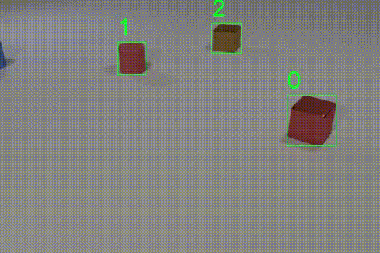
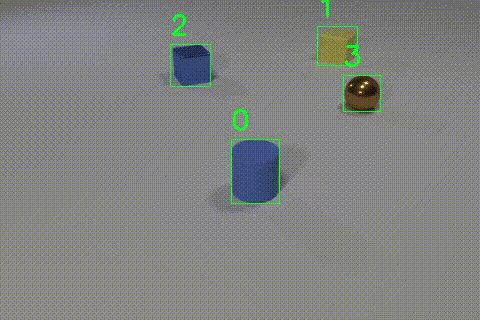
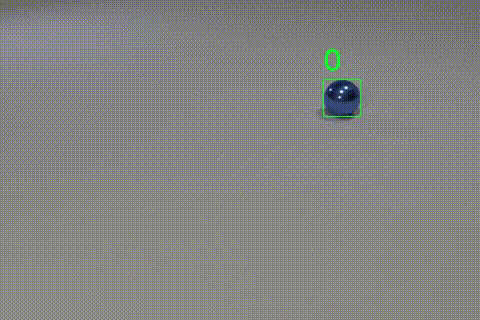
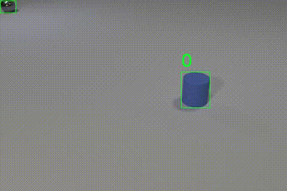
|
|
We visualize the dynamic concepts learned by DCL on CLEVRER. We parse the scenes by densely quantizing the concepts in each
frame. Extracted object trajectories, predictive collision, in and out are marked with green, red, blue and yellow colors.
|
Visualization of Concept Learning on BLOCK TOWERS
|
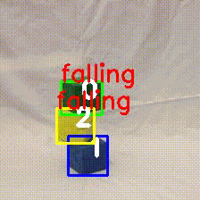
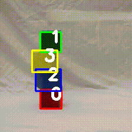
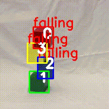
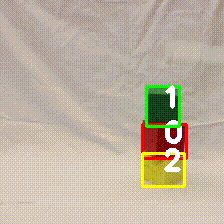
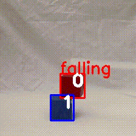
|
We visualize the dynamic concepts learned by DCL on BLOCK TOWERS. We parse the scenes by densely quantizing the color and falling concepts in each video. Extracted object trajectories are bounded by the predicted color. Falling objects are marked with falling on top of their bounding boxes.
|
Qualitative Results on CLEVRER-QA
Q.: What is the color of the last object
to collide with the metal sphere?
A.: Brown. (GT.: Brown.)
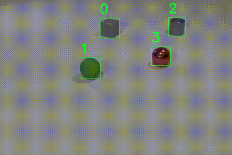
Q.: How many falling blocks are there?
A.: 2. (GT.: 2)
Q.: What is the color of the block at the top?
A.: Blue. (GT.: Blue)
|
Qualitative Results on BLOCK TOWERS. Questions, predicted answers and ground-truth anoswers are
marked with Q., A. and GT., respectively. Extracted object trajectories are bounded by the target objects' predicted colors.
Falling objects are marked with falling on top of their bounding boxes.
|
Qualitative Results on CLEVRER-Grounding
Query: The collision that happens
after the blue sphere exits the scene.
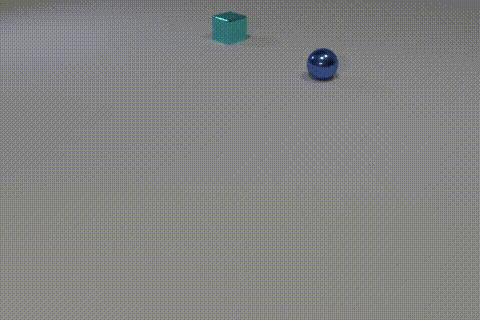
Query: The cube enters the scene before
the rubber sphere enters the scene.
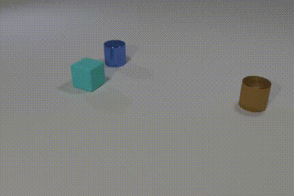
Query: The object that collides
with the brown cube.
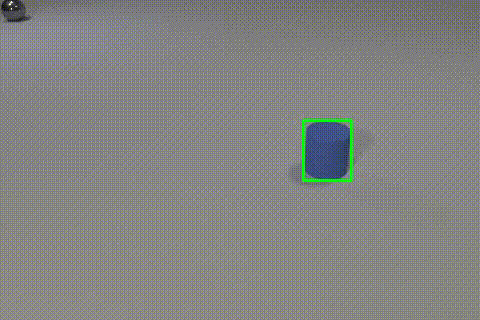
|
We visualize typical examples of CLEVRER-Grounding. The query expressions are shown on top of the videos and the spatio-temporal localization results in the videos are bounded with green boxes. DCL can explicitly ground object and event concepts, analyze temporal structures, and understanding the complex logic to localize the target event or object.
|
Qualitative Results on CLEVRER-Retrieval
Query expression: A video that contains a collision that happens before the green rubber cube enters the scene.
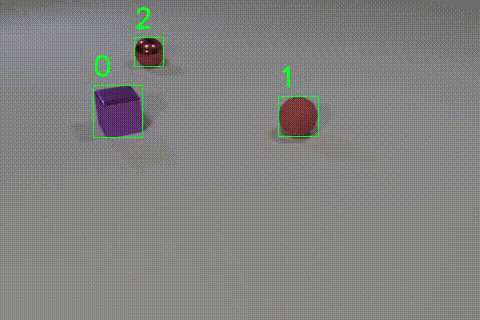
Top 2
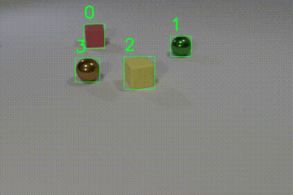
Top 3
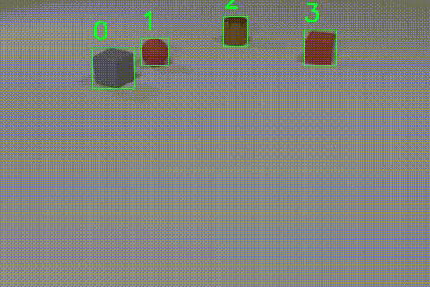
Top 4
|
We visualize a typical example of CLEVRER-Retrieval. Gallery videos with top 4 ranks are shown. DCL can explicitly ground object and event concepts, analyze their relations and perform step-by-step reasoning to get the positive gallery videos.
|
Qualitative Results on BLOCK TOWERS
Q.: Are there any falling green objects?
A.: No. (GT.: No)
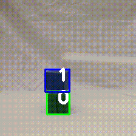
Q.: How many falling blocks are there?
A.: 2. (GT.: 2)
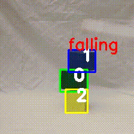
Q.: What is the color of the block at the top?
A.: Blue. (GT.: Blue)
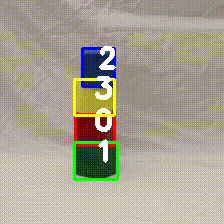
|
Qualitative Results on BLOCK TOWERS. Questions, predicted answers and ground-truth anoswers are
marked with Q., A. and GT., respectively. Extracted object trajectories are bounded by the target objects' predicted colors.
Falling objects are marked with falling on top of their bounding boxes.
|